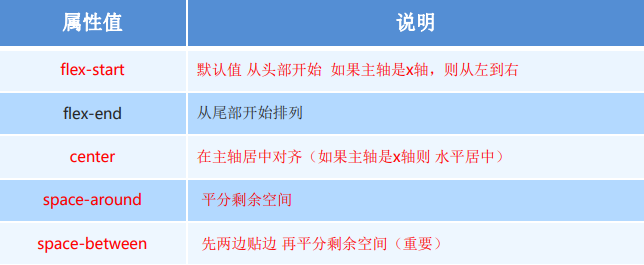
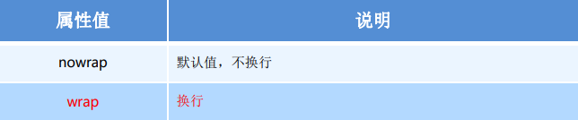
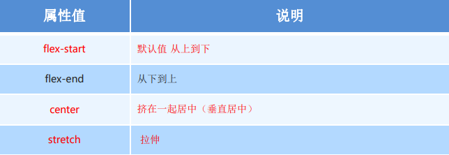
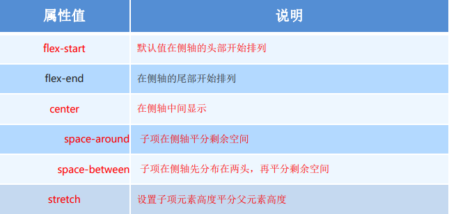
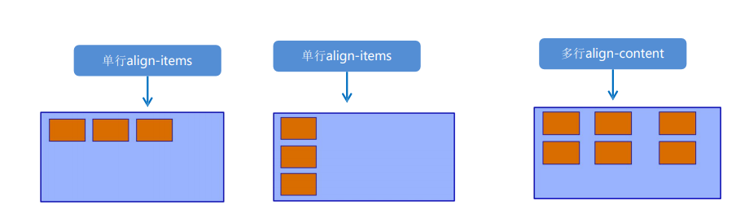
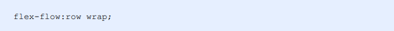

justify-content属性定义了项目在主轴上的对齐方式
注意：使用这个属性值前一定要确定好主轴是哪个
默认情况下，项目都在一条线（又称“轴线”）上，flex-wrap属性定义，flex布局中默认是不换行的。
该属性是控制子项在侧轴（默认是y轴）上的排列方式，在子项为单项的时候使用。
设置子项在侧轴上的排列方式并且只能用于子项出现换行的情况（多行），在单行下是没有效果的。
单行找align-items多行找align-content
 设置子项在侧轴上的排列方式并且只能用于子项出现换行的情况（多行），在单行下是没有效果的。
单行找align-items多行找align-content
